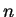
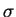

This option works similarly to the previous one. It calculates the
total DOS (both raw and the smeared one). To run this option, two
additional files are necessary: band.out containing energies
and produced after the DFT run, and brill.dat produced by
tetr during the generation of the  -points
for the DOS option, see Section 2.6.6.2.
-points
for the DOS option, see Section 2.6.6.2.
The new functionality here is an ability to calculate and plot the DOS curves for individual groups of bands (states). In other words, the index

in Eqs. (3.4) and (3.5) runs over the chosen bands (states) only.The menu:
..............MENU DOS/LDOS .......................
..... Change these parameters if necessary:...
______________> Only total DOS <_______________
0. THE CURRENT PICTURE IS: 1
2. Maximum energy step for the plotting: 0.10000
> Number of points for the DOS plot: 220
> Steps for each "physical" band:
0.10000 0.10000 0.10000
3. Smeared DOS/LDOS: DISABLED
7. Number of groups of bands: ... undefined ...
8. Adopt present setting and calculate DOS/LDOS
11. Preview the current DOS/LDOS
12. PostScript file for the current DOS/LDOS
13. Upper limit to the energy-range of the plot: DISABLED
14. Quit: do not proceed.
---> Choose the item and press ENTER:
The number of groups of bands is chosen in 7. In the calculated plots the DOS curves associated with each group will be shown by a different colour on the same plot. This is useful if the states responsible for certain features in the DOS need to be known.
If, say, out of all 8 bands three groups are chosen, namely 1-4, 5-6 and 7-8, then lev00 will first show (just before updating the menu) how the energy is split between the groups:
... The group 1 covers bands from 1 - 4
... The group 2 covers bands from 5 - 6
... The group 3 covers bands from 7 - 8
..........< Group 1 >...........
Energies E are between -.127706E+02 and 0.449350E+01 eV
..........< Group 2 >...........
Energies E are between 0.936580E+01 and 0.203830E+02 eV
..........< Group 3 >...........
Energies E are between 0.166957E+02 and 0.248751E+02 eV
The menu will then be updated with the option 7 changing into:
7. Number of groups of bands: 3
> The following groups of bands are defined:
{1} 1_ 4; {2} 5_ 6; {3} 7_ 8;
> Files for the plot: dos.dat1_1 , ... , dos.dat3_1
> Names of the PostScript files: dos.dat1_1.ps , ... , dos.dat3_1.ps
It now shows explicitly all the file names to be produced. After calculating the DOS (option 8), the DOS curves for each group can be seen in different colours (option 11) as shown in Fig. 3.2.
Note that if the smearing is enabled (either slow or fast, option 3, see Section 3.4), all calculations will be done using a single values for

andOther options in the menu are similar or identical to those in the dispersion menu of Section 3.6.2.2, so that we will not consider them here.